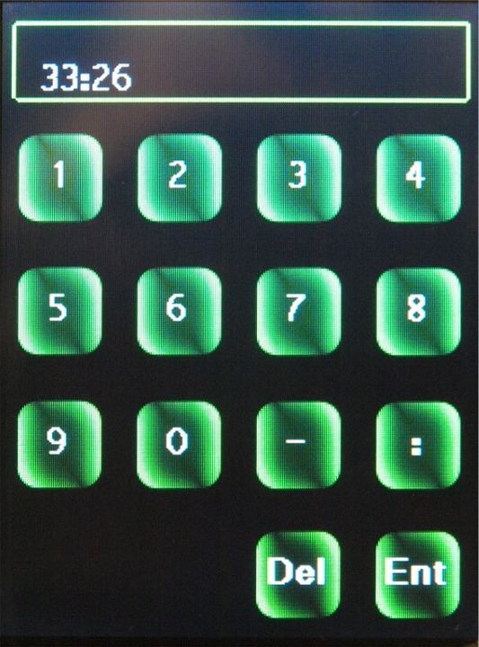
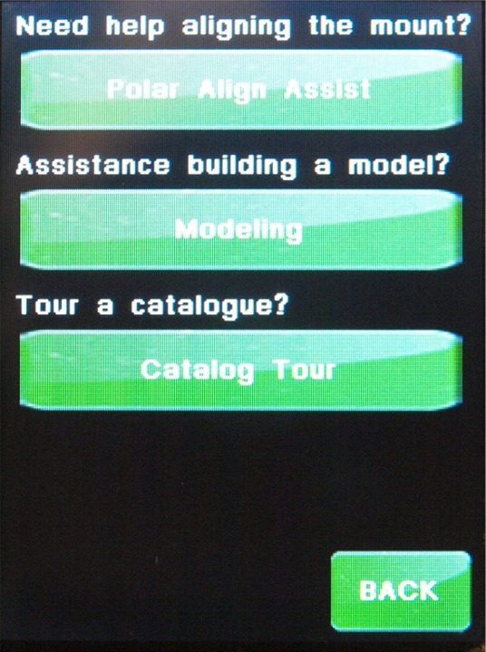
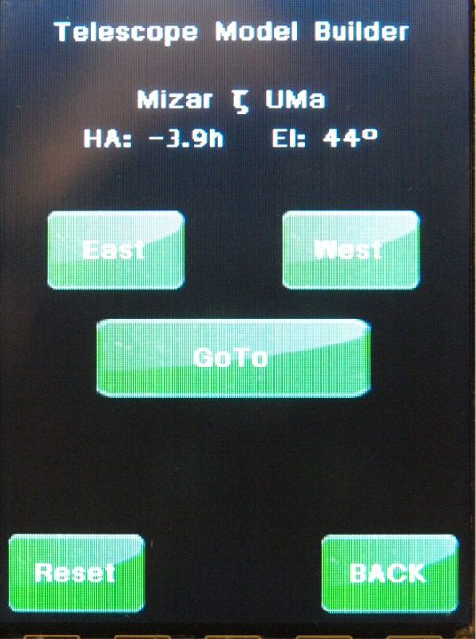
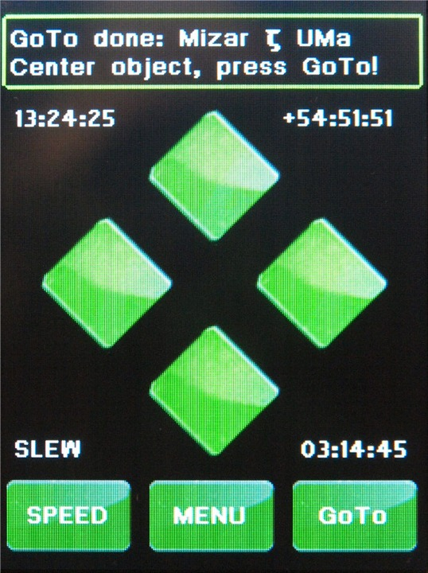
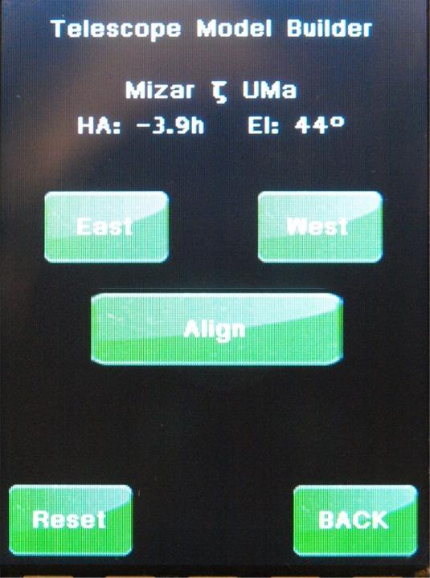
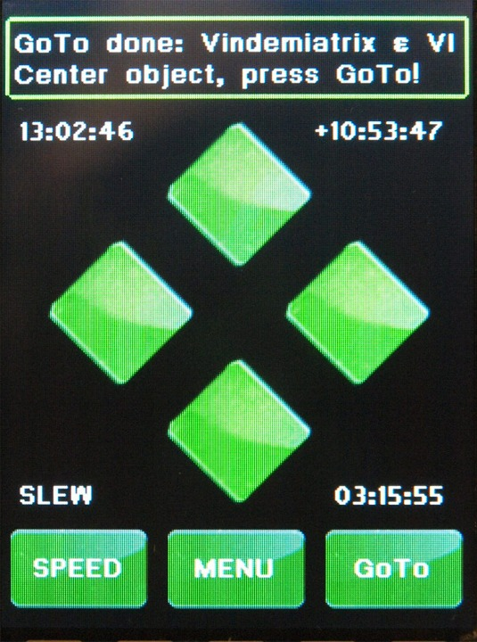

Fig 1 You will want to select the Quick Start button
The is also a new page under Menu-->Mount-->Startup that will let you select the default startup method.

Fig 2
(Note: all new Titans are Titan 50)
| This is the Semi-Automatic Start-up and Alignment procedure |
|
This page only applies to firmware dated
Dec 28, 2011 or later for both the main unit and hand controller. Definition of terms: The Definition of terms have been moved to definitions page. |
 Fig 4 |
If you touch in the top where the -112:04 is displayed, it will go blank. You can now enter the new Longitude. You only enter degrees and minutes. This entry screen will not take seconds, so round the minutes to the nearest minute. PLEASE NOTE: the minutes are from 0 to 59. This is not a decimal part of the degrees. IE: the -112:04 is equal to -112.0667 degrees. Here is a good conversion web site. You will use an figure 4a screen to enter the Latitude of your observing site. Please note that these entries do not modify the permanent setting. If you press on any of the sites in figure 3 above, you will loose these setting. Hit the Ent key, and you will be taken back to Fig 3. Hit in the Latitude box, and you will get a entry screen similar to Figure 5. |
|
 Fig 5 |
This is where you enter Latitude. Latitude is positive for the Northern hemisphere and negative for the southern hemisphere. You enter degrees and minutes just like you did for the Longitude. After you enter latitude hit Ent, you will be taken back to Fig 3. |
 Fig 6 |
Here is where you enter your date and time, and your
time zone offset. You will use figures 7, 8 and 9 to do that. Touching on each entry on the screen on the left will take you to one of the below screens on your hand controller. Lets do date, offset and then time in that order. Once all are entered you will come back here and hit the Set button and then the next button. Note that the time you set in figure 8 below, will not take effect until you hit the set button on this screen. After you have finished with Figures 6, 7 and 8, hit the set button, then hit Next. Fig 9 should appear. If it does not then from the main screen, hit menu -->Funct The Time just above the Next button is the calculated SideReal time. If you would like to make sure it is correct go to Local Apparent Sidereal time and enter your longitude. It will show your sidereal time and you can compare them to make sure everything is correct. |
 Fig 7 |
This is the date setting screen. You set your local date. It is in Month (two digits) / Date (two digits) and / year (two digits). You can get away with a single digit for the month, and the day, but not the year. Hit Ent and go back to fig 6 |
 Fig 8 |
Here is where you set your time zone offset from UTC. Note: you do have to compensate for daylight saving time in this offset.
Positive offsets do not need a leading zero if they are only one digit.
The Gemini 2 will take care of that. Notice offsets West of UTC is
negative, and East is positive. The date, time and this offset is used to compute the correct UTC time and date for the Gemini-2 to calculate all of the star locations, along with your latitude and longitude. The more accurate you can set the time, the more accurate your first star goto will be. Once you align on your first star, then the Gemini-2 will make corrections from that star, and any more stars you align on. Hit Ent and go back to fig 6 |
 Fig 9 |
This is the screen where you enter your time. Enter your time in 24 hour format. Put a : between the Hours : Minutes : Seconds
I normally enter the time at least 30 seconds in the future. This gives me time to get back to Fig 6 (hit Ent to goto fig 6) and then hit the Set button on figure 6 at the correct time. |
|
 Fig 10 - you can also get to this screen from Menu--> Funct |
Before using this menu, I suggest that you set your
safety limits. We are going to select modeling from this screen. The Polar Align Assist has to be done before a model is built. It will help you get within about 1 to 2 degrees of the pole. The catalog tour lets you tour catalog objects that are above the horizon. Please select Modeling. |
 Fig 11 |
This is the Semi Automatic Modeling Function. It will automatically pick a star that should be above the horizon and on the east side. (it probably will not be the same star shown in the menu on the left.) If you do not want the star it picks simply hit the East button and it will pick another. If you want to do a star on the West, just hit the West button. (Note: if you hit the west button and the mount thinks it can reach it without doing a meridian flip, it will try and go to it without the flip. You really need to make sure that your limits are set. If they are not, then the mount could hit and do damage to your telescope or mount. See Menu-->Mount--Limits) Also stars on the west side that are close to the meridian can be added to the East model. If the mount does not pass 90 degrees Dec (IE do a meridian flip, then you are still building a model on the east. The same holds true when going from a model being built on the west to the east. This is actually designed this way to help refine each model as you move from east to west or west to east. If you are happy with the star it selects, then hit GoTo. This will make the mount go to the star selected and then figure 11 will appear. |
 Fig 12 |
After the goto is finished and you receive the message "Goto done: --- Center Object, press Goto" use the arrow buttons on the front or back of the hand controller to center the star in the
eyepiece. (If you also have a classic hand controller attached, you can also use that.)
After centering the star, hit GoTo. |
 Fig 13 |
You will hit align if this star is acceptable. If not just hit East or West to go to the next selection. Hitting Align will also take you to the next selection. The reset is to clear the last star added to the alignment. |
|
 Fig 14 |
This is the start of adding the second star to the alignment. If this star is acceptable, hit GoTo, otherwise hit East or West to select the next star. |
|
 Fig 15 |
The mount has moved to this star, center it using the handpad and then hit GoTo. |
|
 Fig 16 |
You will hit align if this star is acceptable. If not just hit East or West to go to the next selection. Hitting Align will also take you to the next selection. You have finished adding the second star. |
 Fig 17 |
This is the start of adding the third star to the alignment. If this star is acceptable, hit GoTo, otherwise hit East or West to select the next star. |
|
 Fig 18 |
The mount has moved to this star, center it using the handpad and then hit GoTo. |
 Fig 19 |
When the addition menu selection "PAC" shows up, that
indicated that the mount has calculated a model good enough to try and
do a Polar Align Correction. A Polar Align Correction will provide a even more
accurate alignment of the mount to the pole. Usually within several minutes or seconds, depending on how accurate your alignment was.
Note, if you do the Polar Align Correction, this
will wipe out out alignment you just did, and you will have to do it again. But since you are now even better polar aligned, it should be a better alignment. You can continue adding more stars to the alignment, or switch to doing stars on the west side. For the most accurate alignment you need to do at least 6 stars on each side. It is a good idea to have at least one star on the opposite side in each of the 2 models, IE: 5 stars from the east and one from the west in the East model, and 5 stars from the west and 1 from the east in the West model. The next figure 20 shows the PAC menu. |
 Fig 20 |
This is the PAC or Polar Align Correct menu. It will only show up after a model is built. Note, if you do the Polar Align Correction, this will wipe out out alignment you just did, and you will have to do it again. But since you are now even better polar aligned, it should be a better alignment. |